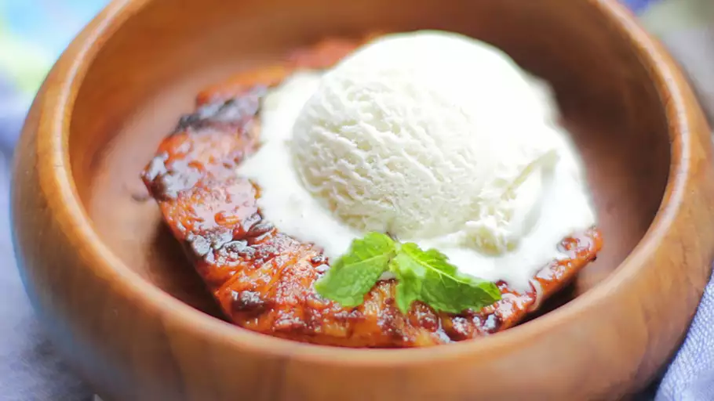

Barbequed Pineapple

Description
Barbecued, marinated pineapple! Serve in a bowl or a banana boat with pineapple on either side, a scoop of ice
cream or two on top, and drizzled with the remaining marinade glaze.
Ingredients
- 1 fresh pineapple
- ¼ cup rum
- ½ cup brown sugar
- 1 tablespoon ground cinnamon
- ½ teaspoon ground ginger
- ½ teaspoon ground nutmeg
- ½ teaspoon ground cloves
Steps
- Peel and core whole pineapple, then slice into eight rings. Place pineapple rings in a shallow dish or
resealable plastic bag. Mix together rum, brown sugar, cinnamon, ginger, nutmeg, and cloves in a small bowl.
Pour marinade over pineapple. Cover and refrigerate 1 hour to overnight.
- Preheat the grill for high heat. Lightly oil the grate.
- Remove pineapple rings from the dish and reserve remaining marinade for serving.
- Grill pineapple rings until dry and char-marked, about 7 minutes on each side. Serve with remaining
marinade.
Recipe Tip: For the drizzling glaze, you can substitute a half cup of fruit juice for the
sugar and rum in the marinade.
Back to Homepage